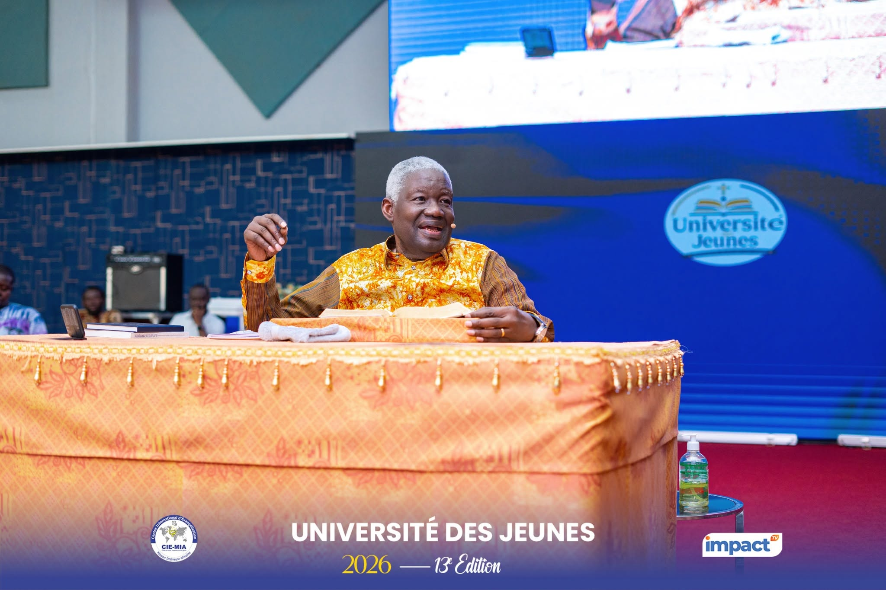
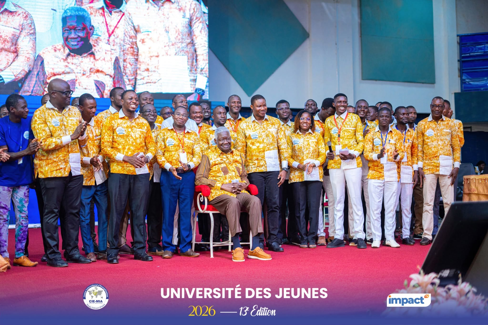
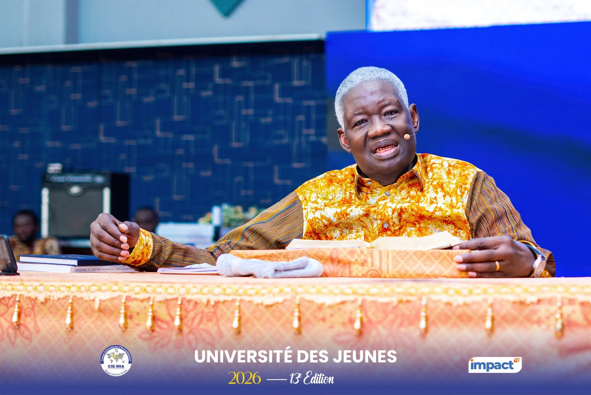
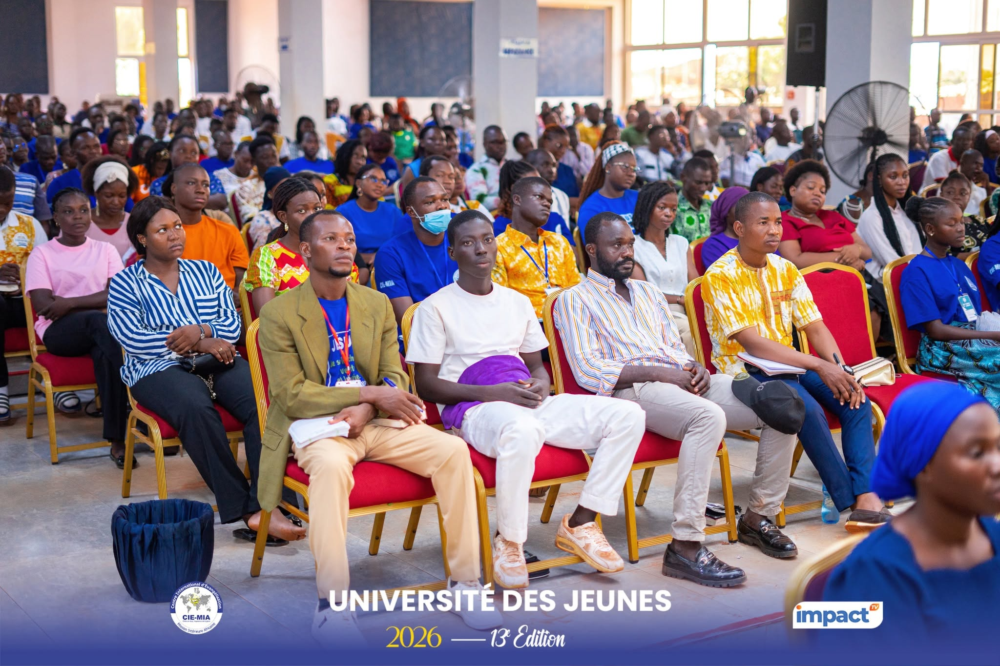
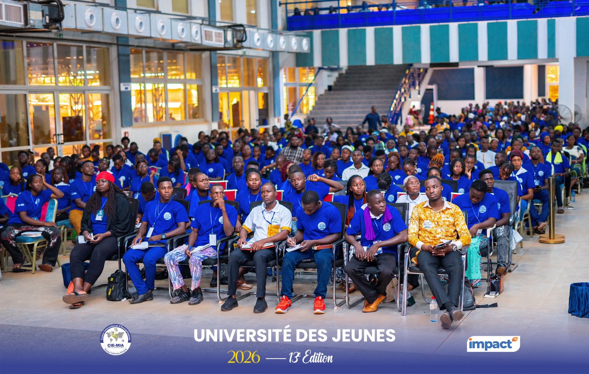
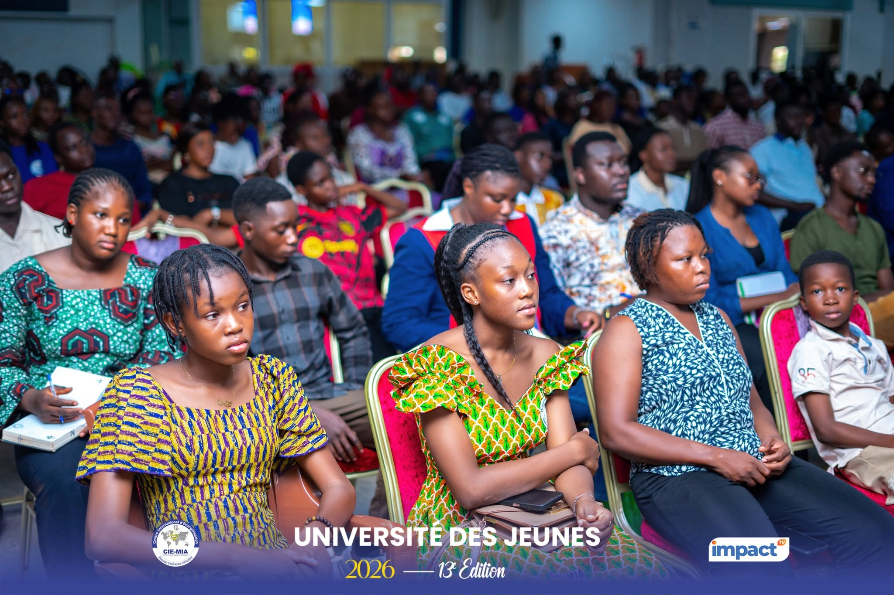

Pour clore la 13ᵉ édition des Universités des Jeunes, le Dr Mamadou Philippe KARAMBIRI a livré une synthèse des enseignements reçus : revenir à la Parole, connaître Dieu, découvrir pourquoi Il nous a créés, comprendre qui nous sommes en Christ, et mettre le Royaume de Dieu en premier.

Retour sur ce message de clôture, tel que relayé par le Bulletin quotidien Édition Spéciale des Universités des Jeunes du CIE/MIA.





Une synthèse des enseignements reçus durant l'Université des Jeunes, autour de deux questions fondamentales : pourquoi Dieu nous a créés, et comment réussir dans la vie selon Dieu.
Dans ce message de clôture, le Pasteur Mamadou Philippe KARAMBIRI présente son intervention comme une synthèse des enseignements reçus durant l'Université des Jeunes. Il veut ramener les participants à deux questions fondamentales : « Pourquoi Dieu t'a-t-il créé ? » et « Comment réussir dans la vie selon Dieu ? ». Ces deux questions sont, selon lui, inséparables : on ne peut comprendre le véritable succès sans connaître son origine, son identité et le dessein de Dieu pour sa vie.
Son exhortation repose sur une conviction forte : la vie chrétienne ne doit pas être vécue uniquement avec les ressources de l'intelligence humaine. Elle est appelée à devenir une vie conduite par Dieu, éclairée par sa Parole et ouverte à son intervention surnaturelle. La réussite biblique ne consiste donc pas seulement à obtenir des diplômes, de l'argent, des fonctions ou une reconnaissance sociale ; elle consiste d'abord à accomplir ce pour quoi Dieu nous a placés sur la terre.
Pour introduire son enseignement, le Pasteur KARAMBIRI revient longuement sur sa conversion en juin 1973. Étudiant brillant, particulièrement confiant dans ses capacités intellectuelles, il raconte comment un échec universitaire a brisé son orgueil et contribué à l'amener à rechercher Dieu. Après être entré dans une assemblée évangélique à Toulouse, il répond à l'appel au salut et reçoit une Bible.
Cet événement devient déterminant : pendant les trois mois qui suivent, il lit la Bible entièrement. Il présente cette immersion précoce dans les Écritures comme l'un des secrets majeurs de son parcours. Depuis lors, affirme-t-il, il ne s'est jamais séparé de la Bible, qu'il étudie continuellement en y consignant les révélations et enseignements reçus.
Il interpelle ainsi les jeunes sur leur rapport à la Parole. Pour lui, négliger la Bible revient à vouloir entendre Dieu tout en fermant la principale source par laquelle Il nous communique sa pensée. La Parole doit donc redevenir centrale dans la vie du chrétien : elle instruit, corrige, construit la foi et donne les repères nécessaires pour discerner les voies de Dieu.
« La foi vient de ce qu'on entend, et ce qu'on entend vient de la parole de Christ. »Romains 10:17
Le témoignage du Pasteur illustre ensuite ce qu'il appelle une vie chrétienne surnaturelle. Après sa conversion, il évoque sa rupture avec certaines pratiques de son passé, ses premières expériences spirituelles, l'évangélisation de ses camarades et plusieurs situations dans lesquelles il a expérimenté la direction et l'intervention de Dieu. Le chrétien ne bâtit pas durablement sa vie sur les émotions, les circonstances ou les opinions des hommes, mais sur ce que Dieu a déclaré.
Pour répondre à cette question, l'orateur demande de revenir à la Genèse. L'homme n'a pas été créé par sa famille. L'homme n'a pas été créé par l'homme. C'est Dieu qui a créé l'homme à son image et à sa ressemblance. Genèse 1:26-28 constitue le texte de base : Dieu crée l'homme à son image et à sa ressemblance, puis lui confie une mission : être fécond, multiplier, remplir la terre, l'assujettir et exercer une autorité sur la création. L'identité précède donc la mission.
Le Pasteur KARAMBIRI distingue ainsi plusieurs réalités bibliques : l'homme est d'abord créé, puis il est formé, avant d'être placé dans un environnement où Dieu lui confie une responsabilité. Genèse 2:7 le dit : « L'Éternel Dieu forma l'homme de la poussière de la terre… ». Cette distinction lui permet de revenir sur les verbes fondamentaux : être, avoir et faire. On ne peut rien « faire » si l'on ne sait pas d'abord qui l'on « est » et ce que l'on « a ». Nombreux, pour lui, cherchent la réussite sans connaître leur identité en Christ.
Connaître son identité implique de connaître également celui dont on dépend. Le message insiste particulièrement sur l'immutabilité de Dieu. Jacques 1:17 déclare que toute grâce excellente et tout don parfait descendent d'en haut, du Père des lumières, chez lequel il n'y a ni changement ni ombre de variation. Malachie 3:6 ajoute : « Je suis l'Éternel, je ne change pas. » L'orateur invite donc la jeunesse à bâtir sa confiance sur la nature immuable de Dieu.
Le message fait ensuite un parallèle entre Adam et la nouvelle création en Christ. Adam avait reçu une mission, mais la chute a introduit la désobéissance. En Jésus-Christ, Dieu établit une nouvelle création. Cette identité conduit directement à la mission. Jésus déclare dans Matthieu 28:18-20 : « Tout pouvoir m'a été donné dans le ciel et sur la terre. Allez, faites de toutes les nations des disciples… ». Pour l'enseignant, ce passage est l'« ordre de mission » de chaque chrétien.
Ainsi, la vie chrétienne ne doit pas être tournée exclusivement vers la recherche de bénédictions personnelles. Elle comporte une responsabilité : faire connaître Christ, servir les autres et participer à l'accomplissement du dessein de Dieu dans sa génération. L'Apôtre Paul demeure un modèle de cette fidélité ainsi qu'il est écrit : « J'ai combattu le bon combat, j'ai achevé la course, j'ai gardé la foi » (2 Timothée 4:7-8).
Dans la deuxième partie, le Pasteur Mamadou Philippe KARAMBIRI reconnaît que l'intelligence humaine peut faire de grandes réalisations. On peut apprendre l'économie, la gestion ou l'entrepreneuriat et obtenir des résultats sans nécessairement connaître Dieu. Mais ce succès est limité lorsqu'il devient indépendant du dessein divin.
Son avertissement est particulièrement adressé aux jeunes attirés par l'entrepreneuriat : le projet ne doit pas avoir uniquement pour finalité l'enrichissement personnel ou la satisfaction de l'ego. Le véritable succès doit également devenir une solution pour les autres. À ce titre, Joseph constitue un modèle dont l'élévation a servi à sa famille, sa nation et sa communauté.
Se basant sur Matthieu 6:19-34, l'homme de Dieu rappelle que Jésus met en garde contre les trésors terrestres qui sont destructibles et insiste sur le fait que personne ne peut servir deux maîtres. La conclusion se trouve en Matthieu 6:33 : « Cherchez premièrement le royaume et la justice de Dieu ; et toutes ces choses vous seront données par-dessus. »
« Cherchez premièrement le royaume et la justice de Dieu ; et toutes ces choses vous seront données par-dessus. »Matthieu 6:33
Pour l'orateur, ce verset ne condamne ni le travail, ni les affaires, ni la prospérité. Il établit plutôt l'ordre des priorités : le Royaume doit venir en premier.
Le prédicateur insiste ensuite sur un obstacle majeur à la réussite : la peur. Israël avait reçu une promesse, mais la peur des géants pouvait l'empêcher d'en prendre possession. De même, de nombreux chrétiens savent ce que Dieu dit, mais leurs actions restent dominées par la réalité en face. D'où l'ordre adressé à Josué : « Fortifie-toi et prends courage… », (Josué 1:6-9). Les besoins matériels ne doivent pas devenir le maître du chrétien.
L'une des dernières images fortes du message est celle d'un sous-sol contenant déjà de l'or. La richesse peut être présente sans être encore exploitée. Il faut connaître son existence puis disposer des moyens permettant de l'extraire.
De la même manière, le prédicateur affirme que Dieu a déjà accordé au chrétien des bénédictions en Christ. La foi, la prière, l'action de grâce, la méditation et la proclamation deviennent alors les « instruments » permettant d'entrer concrètement dans ce que Dieu a préparé. Cette pensée rejoint Éphésiens 1:3 : Dieu « nous a bénis de toutes sortes de bénédictions spirituelles dans les lieux célestes en Christ ».
La prière change dès lors de perspective. Au lieu de demander continuellement à Dieu, le chrétien rend grâce, demande la révélation nécessaire et agit par la foi. L'orateur a insisté sur le fait que la foi s'appuie sur la Parole pour prendre possession de ce que Dieu a déjà donné.
Le message s'achève par des proclamations dans lesquelles les jeunes ont été invités à rejeter la peur et l'échec, à reconnaître leur force en Christ et à fixer leurs regards sur Jésus.
Reviens à la Parole, connais Dieu, découvre pourquoi Il t'a créé, comprends qui tu es en Christ, mets le Royaume en premier, médite sa Parole, proclame sa Parole et crois en l'œuvre achevée de Christ.
Genèse 1:26-28 · Genèse 2:7 · Jacques 1:17 · Malachie 3:6 · Matthieu 28:18-20 · 2 Timothée 4:7-8 · Matthieu 6:19-34 · Matthieu 6:33 · Josué 1:6-9 · Éphésiens 1:3 · Romains 10:17